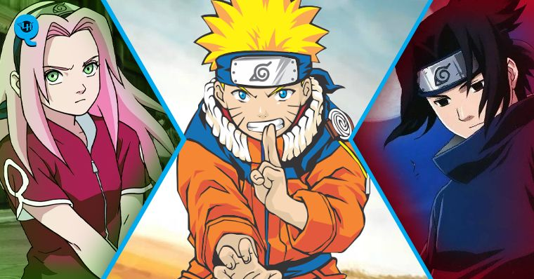

Time 7
Naruto é um garoto que tem o sonho de se tornar Hokage. Mas no meio do caminho encontra vários desafios que o faz ficar mais forte. Ele segue no seu objetivo de "Salvar" Sasuke da maldição do Ódio. Após a morte de seu sensei Jiraiya chamado por ele como Ero-Sennin ele fica inconsolável porém isso o inspira a ficar mais forte e vingar a morte de seu sensei. No Monte Myoboku , lugar onde as invocações de sapo moram ele aprende e atinge o Modo Sennin Perfeito , façanha que nem seu sensei tinha conseguido alcançar.
Pain , O Líder da Akatsuki que matou o Jiraiya , ataca Konoha e então Naruto deixa dois clones no monte Myoboku acumulando chakra Senjutsu e volta para Konoha e então começa a épica batalha , Naruto vs. Pain.
Naruto derrota os Seis Caminhos da Dor de Uzumaki Nagato e então vai até onde ele estava para conversar. Após ele ouvir a história de Pain ele conta que também sentiu dor na sua vida mas superou e seguiu em frente . Nagato fala :- Desde Que Vivamos nesse Mundo amaldiçoado não haverá a paz Verdadeira !
Então Naruto responde :
- Então eu vou quebrar essa maldição ! Se não há paz eu a criarei !
Nagato lembra de quando disse isso á seu sensei e se emociona se arrependendo de seus erros e então usa o Rinne Tensei No Jutsu para reviver todos que ele matou desde que chegou á Konoha e confia que Naruto alcançará a paz. Após esses acontecimentos Tsunade fica em coma devido á ter usado muito chakra para proteger e curar todos na vila e Danzou se aproveita disso para assumir o posto de Hokage. Danzou ordena á seus Anbus que fiquem de olho no Naruto , e , Sai que também era da Ne conta isso para o Naruto , e também conta que Sasuke foi classificado como Nukenin Rank-S . Naruto encontra dois Ninjas da névoa que dizem que o Sasuke capturou seu mestre e então Naruto se oferece para ajudá-los a encontrar seu sensei. Após esses acontecimentos , Sasuke ataca os 5 Kages na reunião e então se torna um criminoso procurado pelas 5 nações .
Sasuke ataca e mata Danzou que estava voltando pra Konoha . Sakura que tentou matar ele , ia ser morta por ele mas o Kakashi chegou para ajudá-la , Kakashi lutou contra Sasuke e Sakura novamente tentou matá-lo porém Sasuke agarra Sakura pela garganta e ia matá-la com a junção que a mesma estava segurando mas antes disso acontecer Naruto chega e a salva. Kakashi sem outra escolha ia matar o Sasuke mas Naruto o prende e vai pra cima de Sasuke com seu Rasengan na mão e o bate no Chidori de Sasuke. Depois disso Tobi (Obito) chega pra levar o Sasuke de volta para o esconderijo
E então Naruto vai para uma ilha na Vila da Nuvem e aprende a controlar o Chakra da Kyuubi . Naruto descobre que estava sendo mantido escondido por causa da 4ª Guerra Ninja. Naruto foge junto com Killer Bee e luta contra Edo-Itachi e Edo-Nagato , após ganharem eles vão para o campo de batalha.
Naruto Luta na guerra e entra em comunhão com a Kurama e então junto com Sasuke , Sakura , Kakashi e os 4 Hokages anteriores ele luta contra Madara,Obito e o Juubi.
Ele Luta contra o Novo Jinchuuriki do Juubi o Obito e junto com Sasuke ele consegue derrotá-lo então Madara se aproveita e se torna o novo Jinchuuriki do Juubi após capturar e juntar as 9 Bijuus . Sasuke e Naruto ficam gravemente feridos . Minato passa a parte Yang da Kyuubi para Naruto e o Salva. Naruto e Sasuke tem uma conversa com Hagoromo que passa metade do Chakra dele pra cada um.
Eles lutam contra Madara que lança o Tsukuyomi Infinito e é apunhalado por Zetsu que espalha sua consciência nele para reviver Kaguya a mãe do Chakra. Naruto , Sakura , Kakashi e Sasuke lutam contra Kaguya e graças ao trabalho de equipe deles Sasuke e Naruto á selam. Naruto e Sasuke batalham no Vale do Fim e Naruto sai vitorioso após trazer Sasuke de volta á razão.
E depois de alguns anos ele se Casa com Hinata e tem dois filhos ,uma menina que se chama Himawari e um menino chamado Boruto . E após mais uns anos ele finalmente se torna o Hokage De Konoha.
Esse texto foi retirado do site, ANIMO e esse é o meu primeiro HTML. Para entrar em contato comigo é só me enviar um e-mail.